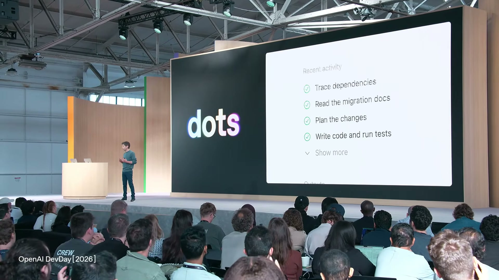
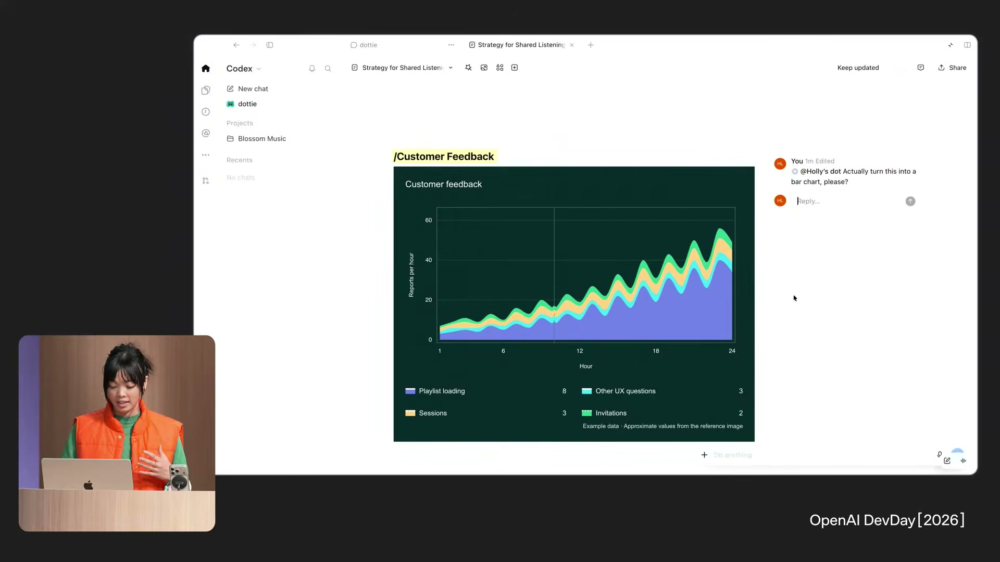
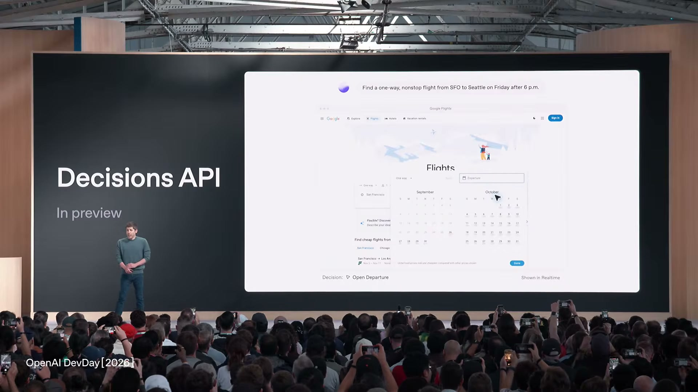
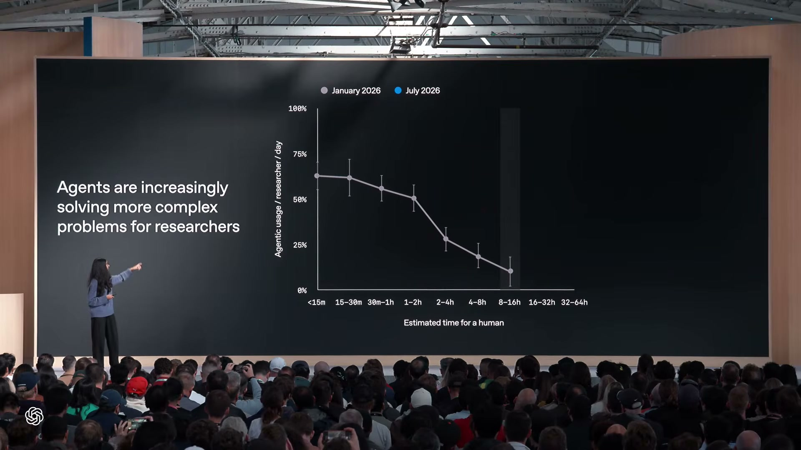
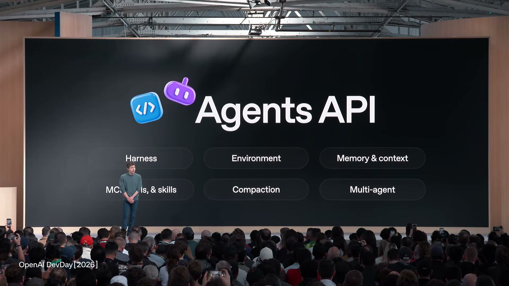
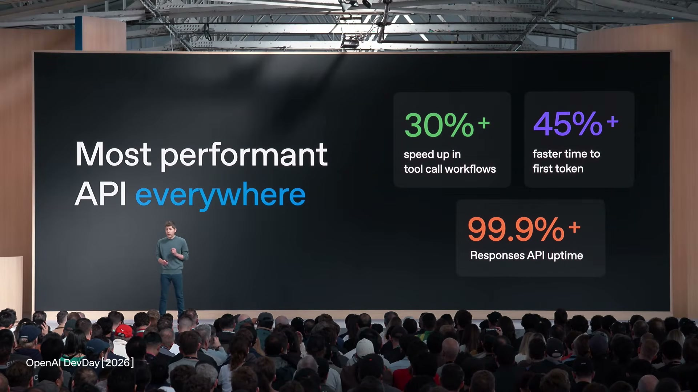
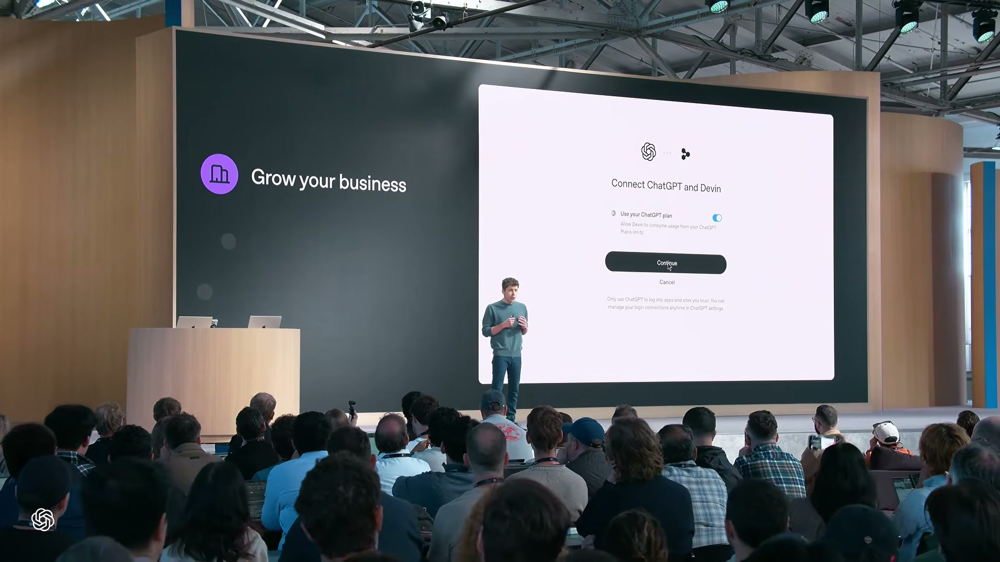
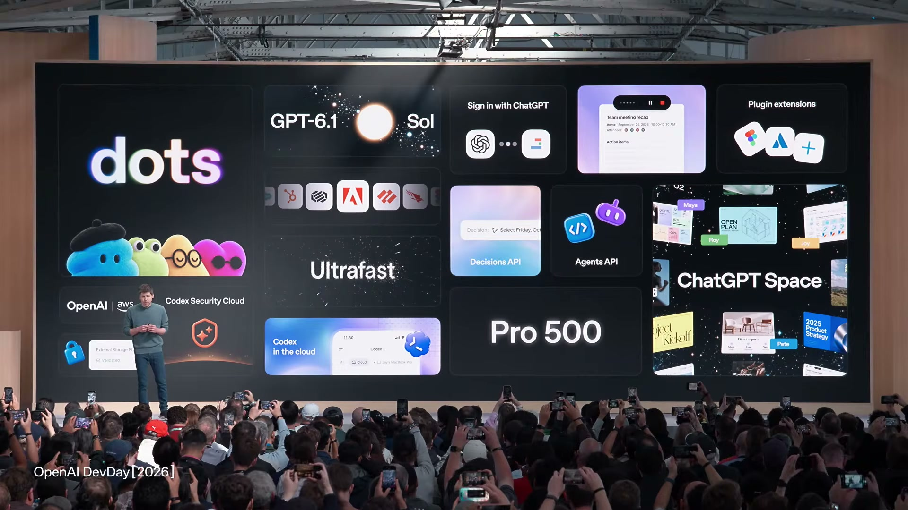

Executive summary
The product is no longer the chat window; it is the work loop
OpenAI's DevDay 2026 keynote moves the center of gravity from a model that answers prompts to a system that can own work over time. Dots are persistent agents with computers, connected applications, identity, permissions, and background execution. ChatGPT Spaces gives people and dots a shared surface for documents, data, prototypes, conversation, and delegation. Underneath them, the Codex harness supplies sessions, tools, compaction, environments, and multi-agent control.
The same architecture is being exposed to developers through the Agents API. GPT-6.1 Sol lowers the cost of capable long-running work; Ultrafast trades money for latency; the Decisions API handles bounded choices without a long generative response. Codex Cloud and computer use provide execution. Private Intelligence and security products address the trust boundary. Sign in with ChatGPT, shared plan usage, and plugin extensions tackle distribution and monetization.
- OpenAI is productizing its internal agent harness. Dots, Codex Work, Codex Cloud, and the public Agents API are presented as different surfaces over related runtime primitives.
- Spaces turns collaboration into shared state. It is closer to a live workbench than a group chat: people and agents can co-create artifacts, inspect progress, and hand work across boundaries.
- The model portfolio is becoming workload-shaped. Astra targets maximum intelligence, Sol targets the capability-cost frontier, Ultrafast targets latency, and Luna powers finite decisions.
- Distribution is now part of the technical stack. OpenAI wants ChatGPT identity, subscription usage, plugin discovery, and interactive extensions to reduce the friction of acquiring and serving AI users.
- The launch is strategically coherent but operationally uneven. Some products are available, others are beta or limited preview, and the keynote's demos and OpenAI-reported metrics are not substitutes for independent production evidence.
This guide uses the full keynote transcript and source frames, then checks product behavior and status against OpenAI's DevDay announcement, model documentation, Agents API documentation, and Help Center pages. Performance, reliability, adoption, and research-progress numbers remain OpenAI-reported claims unless otherwise stated. Rollouts, prices, regions, and eligibility can change after publication.
The strategic thesis
Three layers form one agent platform
Sam Altman frames the developer platform around models, tools, and distribution. The keynote itself reveals a slightly richer system. Intelligence is only the bottom layer. A durable runtime turns that intelligence into work, a collaboration surface makes the work legible to people, and a distribution layer connects the resulting software to users and payment capacity.
This matters because each layer increases the value of the others. Better models make the harness more reliable. The harness lets agents work longer. Spaces creates a place where humans can steer and inspect that work. Distribution brings developers and users into the loop. More real workflows generate the evidence needed to improve the models and product controls.
Launch map
What was announced, and how ready it actually is
The keynote moves quickly between launches, demos, previews, and future availability. The table below normalizes those categories. “Available” still depends on plan, region, workspace settings, and staged rollout; it does not mean universal access.
| Launch | Status at DevDay | What it changes |
|---|---|---|
| dots | Beta / rollout | Persistent personal or specialist agents with cloud computers, connected apps, background work, and messaging identity. |
| ChatGPT Spaces | Rollout | A collaborative canvas where people and dots create, discuss, and update documents, data, prototypes, and other artifacts. |
| GPT-6.1 Sol | Available | Near-Astra capability for complex coding, computer use, and professional work at lower standard token prices. |
| Ultrafast | Astra now; Sol later | A paid latency tier for Codex and API workloads, reported at up to 300 generated tokens per second and up to 8× standard speed in Codex. |
| Pro 500 / Pro 200 | Subscription launch | Higher-capacity consumer access, including Ultrafast at the top tier and broader frontier-model access. |
| Decisions API | Limited preview | Uses Luna to choose among finite, developer-defined answers for fast classification, routing, and action selection. |
| Codex Cloud | Available / rollout | Runs tasks remotely so work can continue while the user's laptop is closed and be resumed across devices. |
| Codex Security Cloud | Research preview | Threat-model-guided vulnerability investigation, validation, deduplication, scheduled scans, and proposed patches. |
| Agents API | Public beta | Exposes the managed Codex harness: durable sessions, tools, memory, compaction, environments, and multi-agent orchestration. |
| Computer use in Agents API | Public beta surface | Lets an agent operate software through the UI inside a chosen environment. |
| Bedrock Managed Agents | Partner launch | Runs OpenAI-powered agents alongside existing applications and data in AWS. |
| Private Intelligence | Mixed availability | Combines privacy-oriented processing paths; ZDR with Private Safety Processing is documented, while Private Inference was announced for a later preview. |
| Sign in with ChatGPT | Available / partner rollout | Provides identity and, with separate consent, lets eligible users apply ChatGPT plan usage to participating third-party products. |
| Plugin extensions | Launch / rollout | Adds full-screen apps, conversation panels, file viewers, editors, dashboards, and workspaces to ChatGPT and Codex. |
| Plugin discovery and review | Platform update | Recommends relevant plugins in conversation and reduces friction when developers revise a submission. |
Dots and Spaces
Persistent agents need a place to work with people
A dot is not presented as a single chat thread. It is an agent that can learn how its owner works, access authorized services, operate a cloud computer, continue tasks in the background, and return with results. In the keynote examples, dots review work overnight, investigate bug reports, prepare fixes, open pull requests, and participate through Slack or Microsoft Teams with a distinct identity.

Spaces solves the coordination problem that follows. If several people and agents are working on the same objective, a stream of private chats fragments the state. A Space instead holds living artifacts and conversations in one shared context. The demo moves between an analysis, an interactive chart, a prototype, teammate comments, and a dot returning from delegated work.

The combination is stronger than either product alone. Dots without Spaces risk becoming invisible background processes. Spaces without durable agents would be another collaborative document. Together they make agent work inspectable and social.
The model portfolio
Capability, cost, latency, and output shape are separate knobs
OpenAI no longer presents one model as the answer to every workload. GPT-6.1 Sol is the default balance: official model documentation describes near-Astra performance for complex work, a 1,050,000-token context window, 128,000 maximum output tokens, and support for tools including computer use, MCP, skills, hosted shell, and structured outputs. Its listed standard price at the time of writing is $2 per million input tokens and $10 per million output tokens.
Ultrafast addresses a different bottleneck. The keynote reports up to 300 generated tokens per second and the DevDay announcement states up to 8× standard speed in Codex and 6× in the API. This is a paid service tier, not a new reasoning method. It matters when latency changes the product experience: interactive coding, voice, computer control, games, or agents that repeatedly wait on model output inside a tool loop.
The Decisions API narrows the output space instead of accelerating an open-ended response. A developer supplies finite choices; Luna selects among them in a fraction of a second. That makes it suited to routing, classification, prioritization, and bounded next actions. It should not replace a generative model when the answer space is unknown or the system needs a novel explanation.

The research flywheel
OpenAI is using agents to improve the systems that build agents
The research section is strategically important because it explains why the product stack may compound. Tejal Patwardhan describes models helping with training infrastructure, computer use, dashboards, game assets, and safer refusal behavior. OpenAI reports that by July more than one-third of day-long internal research tasks completed without human intervention and that models contributed to work on more than one hundred open mathematical problems.

The phrase “AI research intern” is a product narrative, not a scientific category. The defensible claim is narrower: OpenAI now has internal agent systems that can complete a meaningful subset of long research workflows, and the same harness foundations are being shipped in Codex, dots, and the Agents API. This shortens the path from internal capability to external product, while also making evaluation quality and provenance more important.
The developer runtime
The Agents API is the architectural center of the keynote
OpenAI's documentation describes the Agents API as access to a managed Codex harness. The application defines the agent and provides tools; OpenAI manages durable sessions, orchestration, context compaction, and recovery. An optional environment gives the agent files, commands, skills, MCP connections, and computer access. Events and items make progress observable to the host application.

Codex Cloud is a first-party demonstration of this pattern. A task can begin on a phone, continue remotely after a laptop closes, and be reviewed later on another device. Codex Security Cloud applies the runtime to a specialized workflow: build a threat model, investigate candidates, validate exploitability in isolation, deduplicate findings, and propose reviewed patches.
A managed harness does not remove application responsibility. Your system still owns authorization, tool scope, approval policy, domain state, human escalation, outcome evaluation, and audit retention. The harness coordinates intelligent work; it should not silently become the source of truth for the business.
Trust, privacy, and reliability
Long-running agents move the risk boundary from text to action
Once an agent can browse, run commands, access connected services, message a team, and operate for hours, answer quality is only one dimension of safety. The platform must govern who can start work, which data and tools are visible, when an approval is required, how external instructions are treated, where execution occurs, and how an operator reconstructs what happened.
The keynote groups several answers under Private Intelligence. OpenAI's announcement documents Zero Data Retention with Private Safety Processing and describes Private Inference as a later preview. These claims should be mapped product by product. For example, current Agents API documentation states that the public beta supports United States data residency only and is not ZDR-eligible, even when the sandbox is self-hosted.

Distribution and economics
OpenAI wants to reduce both user acquisition and inference friction
Sign in with ChatGPT is more than a familiar login button. The identity flow shares basic profile information with a participating application. A separate permission can allow eligible Plus or Pro users to apply included ChatGPT Work and Codex usage to AI requests in that product, without exposing an API key. Users can set weekly limits per app; the developer may still charge for software, infrastructure, or premium features.

Plugin extensions complete the distribution story. A plugin can be more than a tool endpoint: it can add an interactive panel, file viewer, editor, dashboard, workspace, or full-screen app to ChatGPT and supported Codex surfaces. Contextual discovery lets ChatGPT recommend a relevant plugin during a conversation. Sites can embed the same extensions, allowing generated software to use connected capabilities rather than remaining a static prototype.
For developers, this lowers onboarding and inference-cost friction. For OpenAI, it expands ChatGPT from an application into a platform and identity boundary. The trade-off is dependency: discovery, permission models, plan economics, policy review, and runtime behavior become coupled to OpenAI's ecosystem.
Why this matters for OpenAI
Five strategic consequences follow from the combined stack
- ChatGPT becomes a work substrate. The company is moving beyond a destination where users ask questions toward a persistent environment where people, agents, files, apps, and business processes coexist.
- Codex becomes a general agent runtime. Coding is the proving ground because outcomes are executable and testable, but the harness primitives generalize to research, operations, security, and knowledge work.
- The moat shifts from model quality alone to system integration. Models can be substituted more easily than identity, durable state, permissions, connected apps, collaboration surfaces, distribution, and accumulated workflow traces.
- OpenAI is aligning consumer and developer economics. Shared plan usage can make third-party AI software easier to try while keeping demand attached to an OpenAI account and capacity system.
- The platform creates a capability flywheel. Internal agents help research and build the next generation; product agents produce harder real-world tasks; improved models make those agents more useful.

For an agentic AI platform
What to borrow, and what not to copy blindly
For teams building a master-agent, sub-agent, skill, and MCP platform, DevDay offers a useful decomposition. Treat an agent as a durable runtime contract rather than a persona prompt. Give it explicit tools, skills, environment, memory scope, identity, permissions, and evaluation policy. Put collaboration artifacts outside the chat transcript so both people and agents can inspect and modify shared state.
The most valuable lesson is that multi-agent systems need an operating model, not simply more agents. A master agent should route and coordinate; specialist agents should own narrow outcomes; skills should package reusable procedure; tools should expose controlled capabilities; the workflow should define state, gates, retries, and human escalation. Prompts sit inside that system. They are not the system.
Open questions and risks
The keynote shows direction more clearly than production maturity
- Rollout ambiguity: keynote language compresses beta, limited preview, staged availability, plan eligibility, and regional restrictions.
- Agent economics: persistent background work can make cost less visible; shared plan usage and premium speed tiers need explicit quotas and per-outcome accounting.
- Governance complexity: a dot's model controls, connected apps, local-computer access, messaging permissions, and custom rules can live in different administrative layers.
- Context integrity: long-lived memory and shared Spaces increase the value of continuity but also the blast radius of stale, poisoned, or over-broad context.
- Platform dependence: identity, discovery, subscription usage, plugins, and managed runtime improve velocity while increasing switching costs.
- Evaluation debt: impressive demos do not reveal tail failures, recovery quality, approval errors, or the business loss caused by a confidently wrong action.
- Data-control mismatch: “private” is not one property; retention, residency, safety processing, sandbox placement, telemetry, and third-party tools must be assessed separately.
This is OpenAI's clearest platform statement since ChatGPT. The company is betting that the winning interface for advanced AI is a persistent network of agents embedded in shared work, and that the winning developer platform must own the harness and distribution around the model. The vision is coherent and the pieces are unusually well aligned. The unresolved question is whether real organizations can govern these systems as quickly as OpenAI can make them capable.
Video map
Jump to the part you need
- dots introduced
- ChatGPT Spaces introduced
- Space collaboration demo
- Availability and enterprise controls
- Developer platform thesis
- GPT-6.1 Sol
- Ultrafast
- Decisions API
- AI research intern and research flywheel
- Codex Cloud
- Agents API and computer use
- Private Intelligence
- Live Codex, voice, and Ultrafast demos
- Distribution and business
- Sign in with ChatGPT and plan usage
- Plugin extensions
- Launch recap
Sources
Primary material used for this guide
- OpenAI DevDay 2026 Keynote (full video) — source transcript, demos, and frames.
- DevDay 2026 announcements and developer resources — official launch status and links.
- GPT-6.1 Sol model documentation — pricing, context, features, and residency.
- Ultrafast mode documentation — speed tier behavior and limits.
- Agents API overview and architecture — runtime ownership and data-control boundaries.
- Manage dots in ChatGPT workspaces — permissions and enterprise controls.
- Codex Security — threat models, validation, patches, access, and billing.
- Sign in with ChatGPT and Using your ChatGPT plan in other apps and sites — identity and delegated plan usage.
- Plugins in ChatGPT — extensions, connected apps, permissions, and automation surfaces.